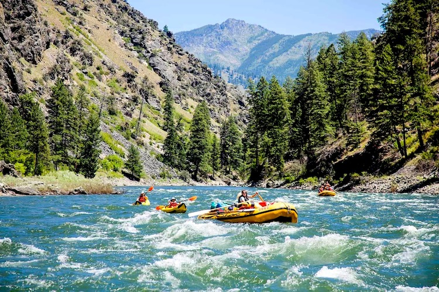
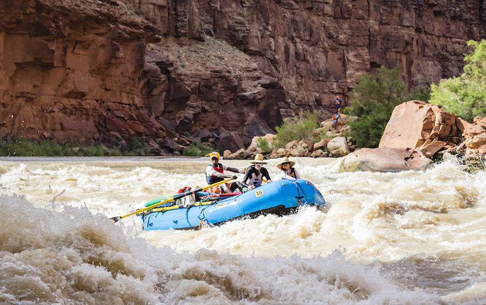
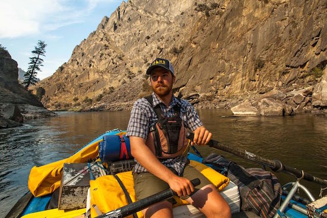
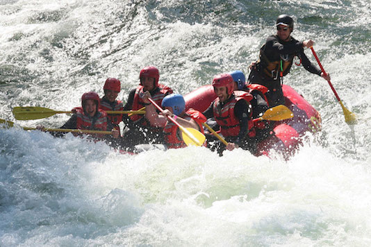

Choose the Right River and Guide!
Rivers
Salmon River

Located in the Sawtooth Mountains in central Idaho, the salmon river is a beautiful escape to bliss. While you may encounter class III to IV rapids, most beginners would be able to float no problem. For those of you who are more experienced, don't be dismayed, there are plenty of tough sections that can provide maximum rafting experience.
This river includes CLASS III AND CLASS IV rapids, those who float should be in good physical condition. This river is long enough, and with adequate resources, to float for multiple days.
Grand Canyon Rafting

Nestled inside the most breathtaking National Park in the United States, the colorado river offers a phenomenal rafting experience to all those who enter. These rapids are set apart from others as you should be an experienced whitewater rafter to participate. While the rapids may be tough, the views and experience will be one you will not soon forget!
The Colorado River, inside the Grand Canyon, includes CLASS IV AND CLASS V rapids. Those who are inexperienced should not raft this area. The length of this river can provide up to 2 days of rafting, but 1 will be more than enough.
Guides
Jared -Top Rated-

Jared is our top rated guide for any adventure! With over 200 IRF (International Rafting Federation) qualified trips under his belt Jared is sure to keep you safe and help you enjoy every minute of the Shallow Rapids© experience
In 2015 Jared graduated from Brigham Young University-Idaho with an outdoor resource major. As part of his schooling he made himself familiar with all sorts of equipment required for survival and outdoor activities. On top of that he has personally rafted the Colorado and Salmon Rivers his whole life.
Mike -Most Fun-

Mike is our favorite guide, and our customers agree! Mike understands what he is capable of and can provide you with a Shallow Rapids© experience that you will not soon forget.
Mike grew up in Colorado, and spent almost every free moment that he had in the Grand Canyon with his family, rafting, hiking, biking, camping. You name it, he has done it!